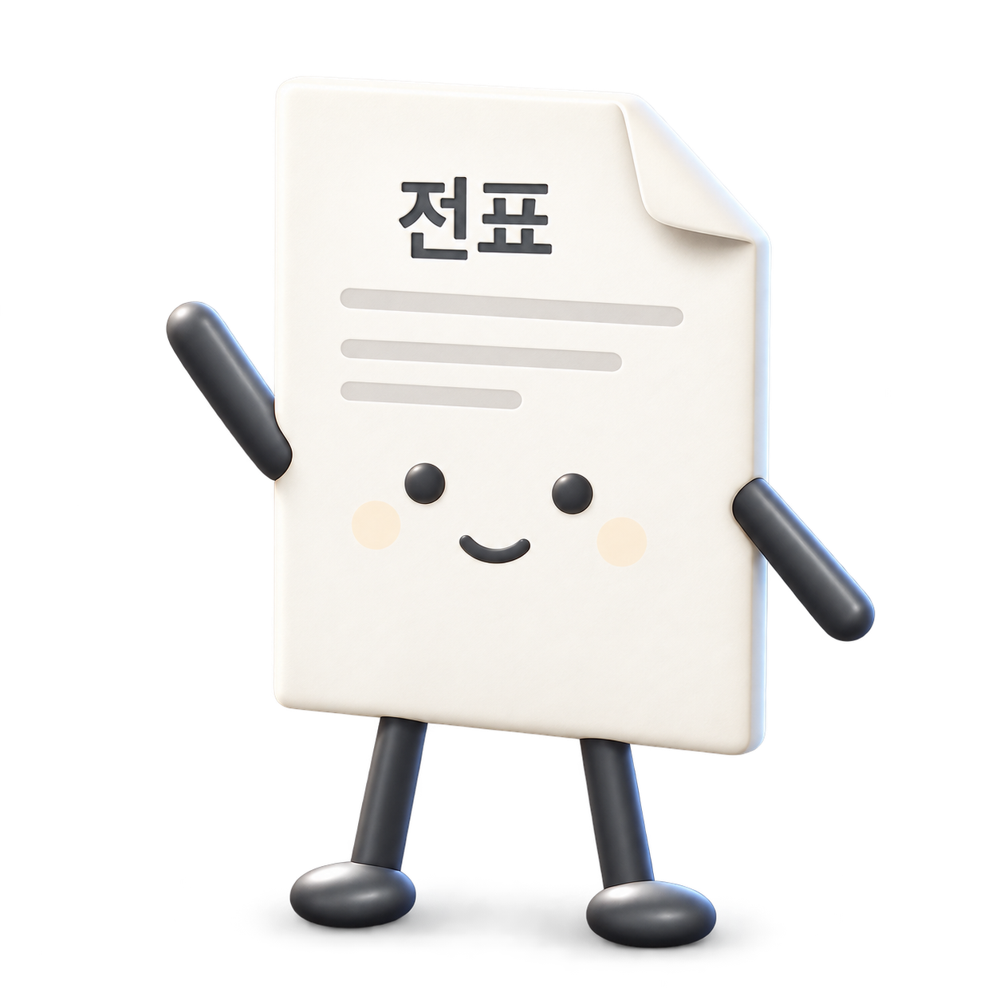
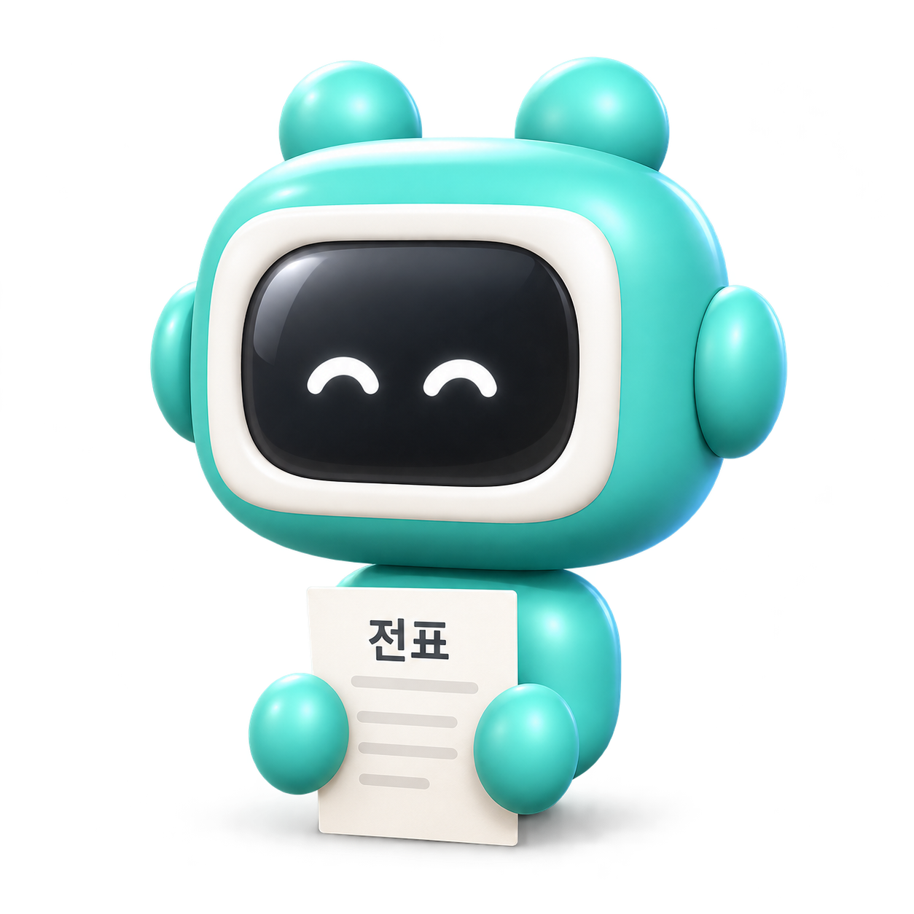
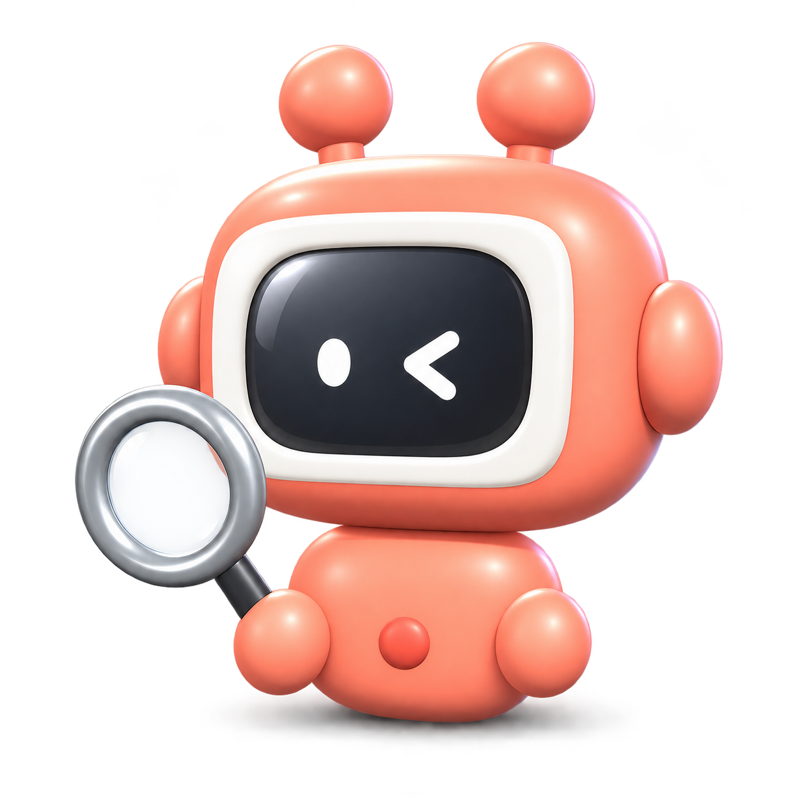
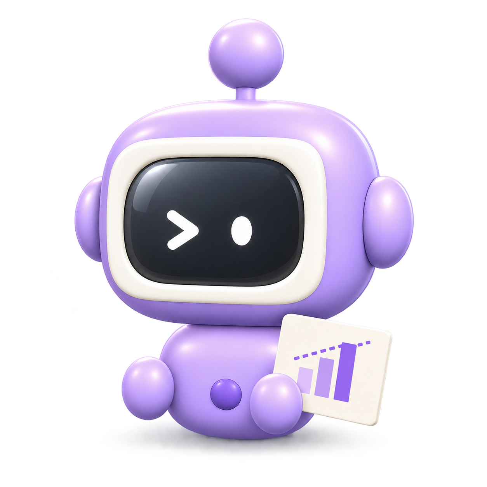

같은 등급(MI) · 지사 간 4.6배
한 지사(파주) · 등급 간 2.3배
정비등급별 1년 표준금액(손익+자본, 억 원) · ONDO 운영 기준 2026-11-04
깨끗한 데이터 → 객관적 기준값 → 10년 전망
20초 만에 나온 결과가 그대로 확정되는 정확도
지사 × 정비등급 × 과목 표준금액 자동 산출
해마다 같은 기준으로 계산 예시 그림
사람이 대조 · 채움 · 예측 → 데이터가 매칭 · 산정 · 예측
표기 정규화 → 전표번호 묶기 → 글자 유사도 → 학습 DB가 다음 해 자동 적용
과거 10개년 실적 기반
실적 없는 지사도 과거 실적 + 유사 지사 데이터 분석 + 현시점 물가 환산 등 다양한 표준화 기법 적용
η² · 변동계수로 산출 방식 자동 추천
표준금액 635개를 같은 기준으로 자동 산출·검증
물가지수 · 설비용량 · 정비등급 · 지사 규모를 시스템이 자동 계산해 반영
설비별 정비등급 × 연도 일정을 10년 자동 전개
표준금액 × 물가 복리 + 고온부품 · LTSA · CRI + 돌발사업
과거로 맞혀 보며 학습 기간을 데이터로 선택
공사 전체로 확대
예측 변수 다각화로 정확도 향상
AI 기반 PIMS 실시간 연동 — 설비별 정비주기 · 정비자재 수요예측 등 신규 플랫폼과 연계, 예측 정확도 99.9% 목표